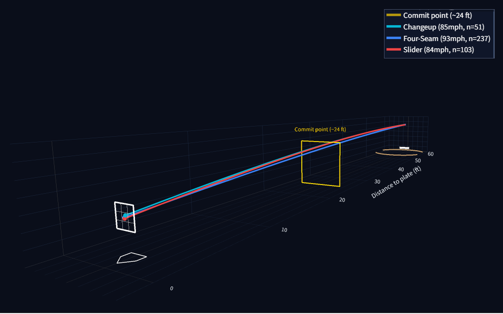
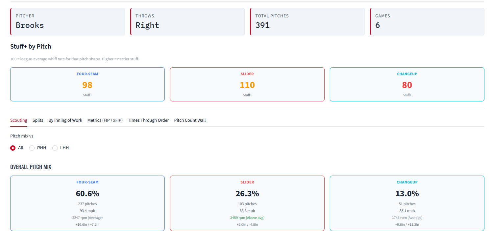
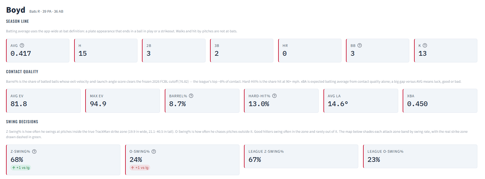

DiamondIntel
Trackman reporting for coaches and players
The Silver Knights coaching staff used DiamondIntel through the 2026 season for pregame plans, scouting reports, and player evaluations. It turns raw Trackman files into reports a coach can read in the dugout, and exports them to PDF.
- Scouting report generator that builds pitcher and hitter reports and exports them as print-ready PDFs
- Stuff+ pitch model built with XGBoost and pitcher-grouped cross-validation
- Expected-stat leaderboards (xBA and xwOBA) and catcher framing
- 3D pitch tunneling from the catcher's view, marked at the hitter's commit point
Built with Python, Streamlit, pandas, and XGBoost.
Open the live demo
The demo uses fictional teams and players on Trackman-format data.


